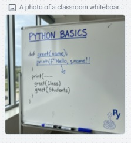

Uma câmera que pensa com você
A JOVI Cam utiliza inteligência artificial para analisar o ambiente, identificar condições de luz e sugerir melhorias em tempo real, ajudando o usuário a capturar fotos melhores sem esforço.

Uma câmera que entende o ambiente e orienta você em tempo real para capturar o melhor resultado.

O que deseja fazer com esta imagem?
Mesmo com câmeras avançadas, muitos usuários não sabem qual modo usar, como ajustar a iluminação ou como enquadrar corretamente uma foto.
A JOVI Cam utiliza inteligência artificial para analisar o ambiente, identificar condições de luz e sugerir melhorias em tempo real, ajudando o usuário a capturar fotos melhores sem esforço.
O scanner da JOVILABS utiliza inteligência artificial para identificar textos, fórmulas, diagramas e conteúdos automaticamente através da câmera do dispositivo.
O usuário pode utilizar prompts personalizados para:
A IA da JOVILABS atua como um assistente inteligente em tempo real, ajudando o usuário durante o uso da câmera.
Através de prompts personalizados, o usuário pode pedir:
Telefone (Número gratuito) De Seg. a Sex. das 9h às 18h 08000350212
WhatsApp (De Seg. a Sex. das 9h às 18h)
Webchat (De Seg. a Sex. das 9h às 18h)
support@jovilabs.com